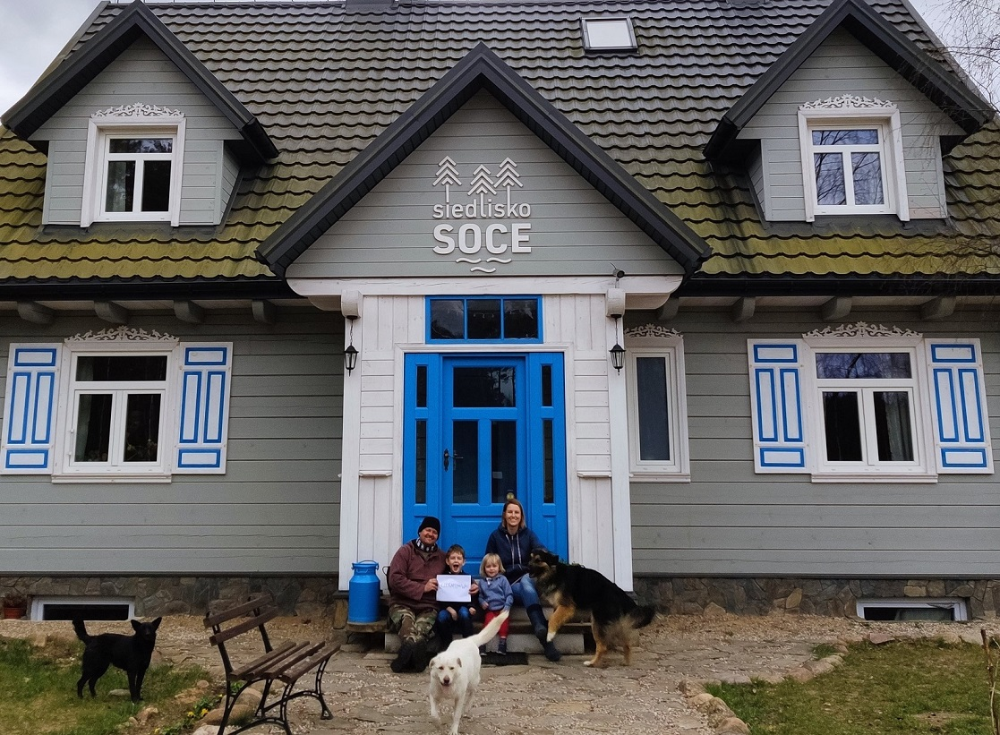
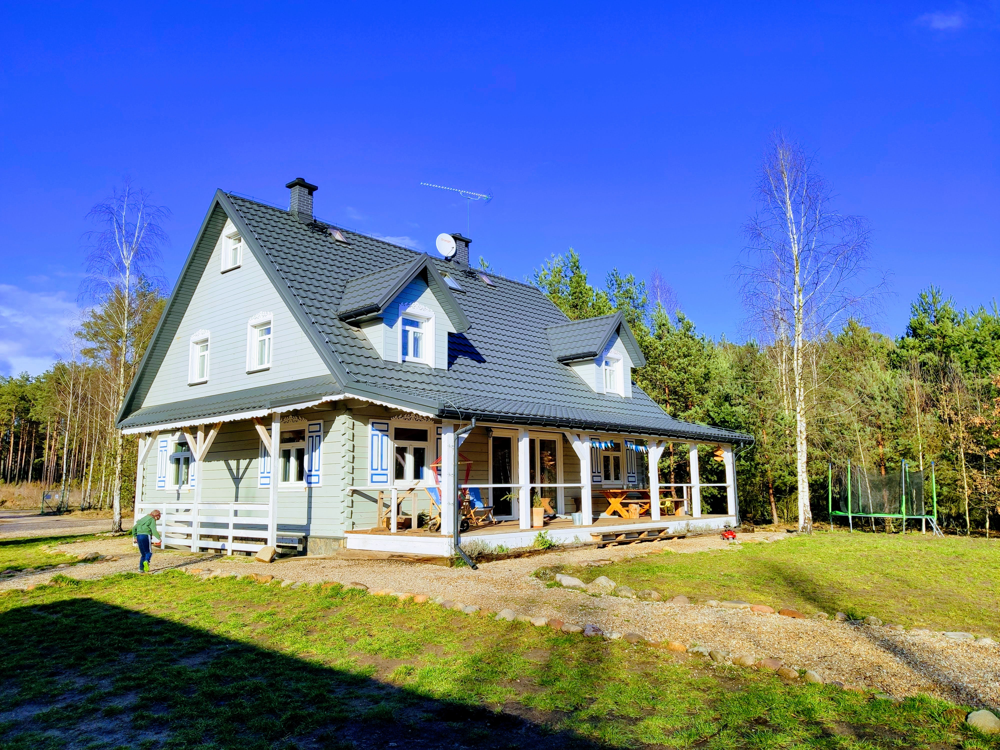

mieszkańcy
Siedlisko Soce na co dzień zamieszkują cztery osoby - Monika i Paweł oraz nasi synowie Leon i Julian. Są tu z nami również trzy psy- Masza, Czarna i Roki oraz dwa koty - Nija oraz Loyd.
Marzenie o drewnianym domu w lesie, z dala od zabudowań, w otoczeniu natury tliło się w naszych głowach od zawsze. Miał być to dom pełen ludzi, pełen smaków i zapachów, rozmów, śpiewów, radosny śmiechem dzieci, spokojny snem głębokim, otwarty i życzliwy, taki, z którego chce się wyjść na spacer w las po to, żeby z największą przyjemnością do niego powrócić i zasiąść wygodnie w fotelu z książką, raz po raz spoglądając to na las za oknem, to na tlący się w kominku ogień. To marzenie się spełnia i jest nam niezwykle miło, że zupełnie obcy ludzie, wybierając nasze miejsce na swój wypoczynek, nieraz stają się bardzo bliskimi nam osobami.


siedlisko
Historia Siedliska Soce ma swój początek w... Socach bowiem stąd pochodzi mój tata i to właśnie tu oraz w sąsiednich Pawłach spędziłam znaczną część swojego dzieciństwa.
Myśl o stworzeniu takiego miejsca na Podlasiu, które stałoby się alternatywą dla pędzącego świata, kiełkowała w mojej głowie odkąd zaczęłam ten świat poznawać. Kilkanaście lat podróży po różnych zakątkach globu i kilka lat uziemienia na pięknym krańcu świata, oprócz tego, że nauczył mnie ogromnej otwartości do ludzi, uświadomił też, że zawrotne tempo, jakie narzuca miasto, przeistacza codzienność w pęd, w którym trudno jest mi się odnaleźć.
Te doświadczenia wyzwoliły we mnie chęć posiadania swojego miejsca na ziemi, które będzie rządziło się swoimi prawami, istniejąc jakby obok pędzącego świata. Na szczęście nie byłam w tym myśleniu odosobniona, a mocno wspierana przez małżonka. Tak właśnie pewnego pięknego wieczora przy zachodzącym słońcu, siedząc na klifach jednej z sydnejskich plaż, stwierdziliśmy - robimy to! Spakowaliśmy dobytek w kontenery, siebie i malutkiego wówczas Leonka w kilka walizek podręcznych, coby jeszcze kawałek świata w drodze na Podlasie zobaczyć i po kilku miesiącach wbiliśmy łopatę pod fundamenty domu, który dziś jest otwarty naszym gościom. Jest miło, jest dobrze, jest jakby poza światem. Można się zapomnieć w ciszy, można odetchnąć świeżym, pachnącym powietrzem, dostrzec niebo usłane gwiazdami w ciemną noc, można smacznie zjeść. Zapraszamy do Siedliska, byście mogli tego doświadczyć.
oferta
Siedlisko Soce obejmuje niespełna 3 ha obszar położony w środku lasu na skraju jednej z malowniczych wsi należących do Krainy Otwartych Okiennic na Podlasiu.
Jest tu dom z bala, w którym mamy Wam do zaoferowania cztery pokoje, a w nich 12 miejsc
noclegowych w dowolnych kombinacjach. W trzech pokojach są łazienki z prysznicami i WC.
Jeden pokój ma swoją prywatną łazienkę, ale wejście do niej jest z korytarza.
Układ łóżek w poszczególnych pokojach przedstawia się następująco:
1-pokój rodzinny z łazienką- jedno podwójne, jedno pojedyncze oraz rozkładany fotel z wygodnym materacem
2- jeżynowy z łazienką- jedno podwójne (można rozstawić na dwa pojedyncze), jedno pojedyncze
3- brzozowy z łazienką- jedno podwójne, dwa pojedyncze(180cm dł.oraz 160cm dł.)
4- dwuosobowy z łazienką z wejściem z korytarza- łóżko podwójne, które można rozstawić na
dwa pojedyncze.
Każdy gość otrzyma od nas ręczniki na czas pobytu. Pokoje gościnne znajdują się na piętrze. Na parterze mieszkamy my - gospodarze.
Strych domu, z którego rozpościera się piękny widok na las, wyposażyliśmy w pełni funkcjonalny aneks kuchenny, jadalnię oraz część wypoczynkową, w której odnajdą się pasjonaci planszówek oraz Ci, którzy na wakacjach być może nadrabiają zaległości filmowe, czy nie chcą przegapić ważnego meczu.
Idąc lasem dochodzimy do miejsca przeznaczonego na ognisko oraz do wiaty grillowej, a dalej do stawu-idealnego dla amatorów zarówno letnich, jak i zimowych kąpieli. Tu możesz przysiąść na moście i zarzucić wędkę. Naszym gościom udostępniamy też łódkę.
kuchnia
Wszystkim naszym gościom proponujemy śniadania, które są przygotowywane przeze mnie z produktów regionalnych, własnych przetworów i wypieków. Typowe siedliskowe śniadanie składa się z deski serów regionalnych, wędlin z wędzarni moich rodziców, warzyw i owoców z własnego ogródka (w sezonie), przetworów z naszej piwniczki, różnej maści past i smarowideł oraz chlebów i drożdżówek wypiekanych z wielką pasją nocą, gdy wszyscy goście smacznie śpią.
Na stole zawsze znajdziecie coś na ciepło. Raz będzie to klasyczna jajecznica na maśle, innym razem racuchy z jabłkami, czasem omlet czy owsianka, a niekiedy placki ziemniaczane lub szakszuka, która stała się sztandarowym daniem śniadaniowym, dla którego niejedni już do nas wracali.
Na obiady i kolacje polecam odwiedzić lokalne restauracje, które możecie napotkać na swej drodze eksplorując Podlasie. Jeśli natomiast zdarzy się tak, że nie będzie Wam się chciało wychylać na krok z Siedliska, na poddaszu jest kuchnia, w której możecie coś sobie upichcić.
Jęsli posiadasz jakieś przeciwwskazania żywieniowe, jesteś wegetarianinem lub weganinem, daj proszę znać a uwzględnię to w swoim gotowaniu.
Kawa i herbaty są dostępne dla wszystkich gości.
-
miejsce przyjazne rodzinom
-
prywatny staw
-
śniadania z regionalnych produktów
-
cisza, spokój, brak sąsiadów
-
wiele tras rowerowych
-
kontakt z przyrodą
Cennik
kwiecien-wrzesień
| liczba osób | cena za pokój | |
|---|---|---|
| Pokój dwuosobowy z osobną łazienką | 2 osoby | 180 zł |
| Pokój trzyosobowy brzozowy | 3 osoby | 220 zł |
| Pokój trzyosobowy jeżynowy | 3 osoby | 240 zł |
| Pokój rodzinny | 4 osoby | 280 zł |
październik-maj
| liczba osób | cena za pokój | |
|---|---|---|
| Pokój dwuosobowy z osobną łazienką | 2 osoby | 160 zł |
| Pokój trzyosobowy brzozowy | 3 osoby | 200 zł |
| Pokój trzyosobowy jeżynowy | 3 osoby | 220 zł |
| Pokój rodzinny | 4 osoby | 240 zł |
W Boże Narodzenie, Wielkanoc, majówkę, weekend czerwcowy- ceny ustalamy indywidualne.
Dostawka dla dodatkowej osoby w pokoju- 60 zł/doba
Łóżeczko dziecięce z pościelą- 100 zł/za cały pobyt
Dziecko do lat 2 nie wymagające osobnego łóżeczka- gratis.
Nie akceptujemy zwierząt.
Śniadanie- 30 zł/os
Dzieci do lat 2 jedzą gratis
Dzieci 2-5 lat- 50% ceny regularnej
Chęć skorzystania z posiłków należy zgłosić w wiadomości potwierdzającej rezerwację.
Rezerwacja jest potwierdzona po wpłacie zadatku w wysokości 30% kwoty pobytu przez system Slowhop. W razie rezygnacji zadatek jest bezzwrotny.
Nie zwracamy pieniędzy w przypadku skrócenia pobytu.


{kind=link}
{kind=link}
{kind=link}